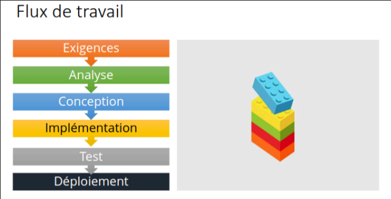
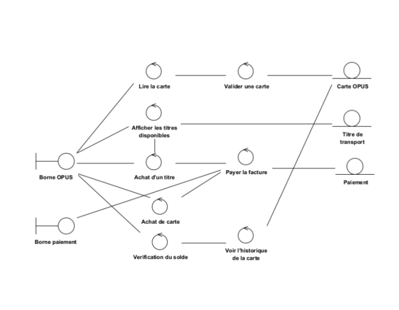
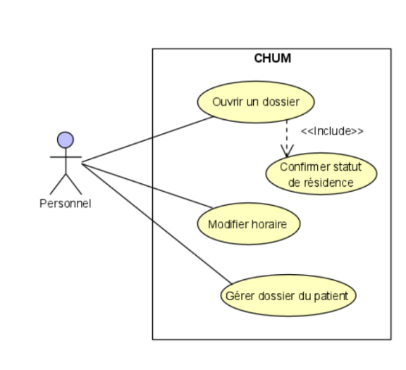

Quelques aides-mémoires
Flux de travail
Flux de travail, suite ...
- Exigences :
- But : déterminer ce dont le client a besoin.
- Spécifications doivent être précises, complètes et correctes.
- Document de spécifications comme artefact.
- Analyse :
- But : analyser et affiner les exigences.
- Conception :
- But : produire une solution implémentable.
- Comprendre le domaine d'application.
- Construire un modèle d'affaires.
- Produire la documentation du design.
- Conception architecturale (haut niveau) et détaillée (implémentable).
- Implémentation :
- But : traduire le design dans le langage de programmation choisi.
- Test :
- But : évaluer les artéfacts produits par les autres workflows.
- Déploiement :
- But : rendre le logiciel disponible et livrer des artéfacts au client.
- Préparation des environnements et installation du logiciel.
- Livraison de tous les artéfacts de tous les workflows au client.
Le Modèle ECB
Le modèle ECB est une architecture logicielle qui se compose de trois types de classes :
- Classe Entité : Représente les données structurées et la logique métier. Elle conserve l'état des objets et interagit avec les autres classes pour manipuler ces données.
- Classe Contrôle : Gère le flux de données entre les classes entité et interface. Elle effectue le traitement des entrées, orchestre les opérations et maintient la logique du système.
- Classe Interface : Fournit les moyens d'interaction entre l'utilisateur et le système. Elle reçoit les entrées de l'utilisateur et affiche les résultats, tout en interagissant avec la classe de contrôle pour traiter ces données. Elles contiennent les attributs et opérations.
Les classes entités sont les barres vers le bas, les classes interface ont le petit T sur le côté et les classes contrôles ont une flèche. Les classes de contrôles sont associées à n'importe quelle autre classes. Les classes interfaces ne communiquent qu'avec les classes de contrôle, pas celles entité.
Ce modèle favorise la séparation des préoccupations, améliorant ainsi la maintenabilité et la compréhension du code. En assurant que les classes entité ne communiquent pas directement avec les classes d'interface, le modèle ECB facilite la gestion des changements et des tests.
Les interactions entre les classes se font de la manière suivante :
- La classe Interface communique avec la classe Contrôle pour transmettre les entrées de l'utilisateur et recevoir des mises à jour.
- La classe Contrôle interagit avec la classe Entité pour accéder aux données, effectuer des traitements et retourner les résultats à la classe Interface.
Ce modèle favorise la séparation des préoccupations, améliorant ainsi la maintenabilité et la compréhension du code. En assurant que les classes entité ne communiquent pas directement avec les classes d'interface, le modèle ECB facilite la gestion des changements et des tests.
Comparaison des Modèles d'Analyse
Cette capsule présente une comparaison entre trois modèles d'analyse : fonctionnel, dynamique, et d'objet.
1. Modèle Fonctionnel
Ce modèle décrit les fonctions du système et leurs interactions avec l'environnement externe. Il se concentre sur les services fournis par le système et comment les utilisateurs interagissent avec ces services.
Utilité :- Permet de clarifier les exigences fonctionnelles.
- Facilite la compréhension des interactions avec l'environnement.
- Aide à identifier les cas d'utilisation.
2. Modèle Dynamique
Ce modèle décrit le comportement du système, le séquencement d'actions et les états du système au fil du temps. Il est essentiel pour comprendre comment le système réagit à des entrées et à des événements.
Utilité :- Permet d'identifier les transitions d'état.
- Aide à visualiser le flux des processus métier.
- Facilite la modélisation des scénarios de fonctionnement.
3. Modèle d'Objet
Ce modèle décrit les concepts et entités encapsulant le comportement et les propriétés du système. Il se concentre sur les objets, leurs attributs et leurs relations, facilitant la compréhension de la structure du système.
Utilité :- Permet de définir les entités principales du système.
- Aide à organiser le code de manière modulaire.
- Facilite la réutilisation des composants du système.
Scénarios Include et Extend dans les Diagrammes de Cas d'Utilisation
Dans les diagrammes de cas d'utilisation, les scénarios Include et Extend sont utilisés pour modéliser la relation entre différents cas d'utilisation. Ces deux concepts permettent de mieux structurer et comprendre les fonctionnalités d'un système.
Scénario Include
Le scénario Include représente une relation obligatoire où un cas d'utilisation principal intègre un autre cas d'utilisation. Cela signifie que le cas d'utilisation inclus est toujours exécuté lorsque le cas d'utilisation principal est exécuté. Il est utilisé pour factoriser des fonctionnalités communes qui sont partagées entre plusieurs cas d'utilisation.
Exemple :- Un cas d'utilisation "Passer une Commande" peut inclure un cas d'utilisation "Vérifier le Stock".
Scénario Extend
Le scénario **Extend** représente une relation conditionnelle où un cas d'utilisation principal peut être étendu par un autre cas d'utilisation. Cela signifie que le cas d'utilisation étendu est exécuté uniquement si certaines conditions sont remplies. Il est utilisé pour ajouter des fonctionnalités optionnelles à un cas d'utilisation sans modifier le cas d'utilisation principal.
Exemple :- Un cas d'utilisation "Passer une Commande" peut être étendu par un cas d'utilisation "Appliquer un Coupon" si un coupon est présent.
Résumé des Différences
| Aspect | Include | Extend |
|---|---|---|
| Relation | Obligatoire | Conditionnelle |
| Utilisation | Pour partager des fonctionnalités | Pour ajouter des fonctionnalités optionnelles |
| Exécution | Toujours exécuté | Exécuté si condition remplie |
Pompe d’essence
Les pompes à essence d’une station-service offrent plusieurs options aux automobilistes :
- Chaque pompe permet de choisir entre trois types d’essence.
- L’utilisateur peut effectuer son paiement directement à la pompe avec une carte de crédit, ou en espèces en passant par le caissier.
- Un utilisateur qui effectue son paiement directement à la pompe peut optionnellement utiliser une carte fidélité pour accumuler des points bonis avec son achat d’essence.
- L’utilisateur peut choisir de faire le plein ou entrer une limite sur le montant d’argent. Dans ce cas, la pompe arrête automatiquement de verser l’essence lorsque ce montant est atteint.
- Un utilisateur qui effectue son paiement à la pompe reçoit aussi un reçu imprimé.
- Toutes les pompes sont reliées à un système central de gestion de l’inventaire qui calcule le nombre de litres d’essences restants dans les réservoirs et ce pour chaque type d’essence vendue par le commerce. Cet inventaire est mis à jour automatiquement après chaque vente.
- Chaque vente est aussi enregistrée dans le système de gestion à des fins de vérification.
Cas d’utilisation
Acheter de l’essence avec paiement à la pompe par carte de crédit
Acteurs: Utilisateur (automobiliste), compagnie de crédit, système central d’inventaire
Préconditions: La pompe est active et disponible.
Postconditions: La pompe est disponible pour le prochain client.
Scénario principal
- L’utilisateur glisse sa carte de crédit dans le lecteur.
- Le système confirme avec la compagnie de crédit que la carte de crédit est valide et préapprouve un achat de 50$.
- Le système demande à l’utilisateur s’il détient une carte fidélité.
- L’utilisateur appuie sur le bouton “Non”
- Le système demande à l’utilisateur de choisir le type d’essence désiré.
- L’utilisateur appuie sur le bouton correspondant au type d’essence désiré.
- Le système demande à l’utilisateur s’il désire faire le plein.
- L’utilisateur appuie sur le bouton “Oui”.
- Le système demande à l’utilisateur de prendre le pistolet et de commencer à faire le plein.
- L’utilisateur prend le pistolet et commence à faire le plein.
- Durant le remplissage, le système affiche le montant total de la vente et le nombre de litres d’essences écoulés.
- L’utilisateur replace le pistolet.
- Le système conclut la vente avec la compagnie de carte de crédit.
- Le système communique les détails de la vente au système central.
- Le système imprime un reçu et remet les quantités affichées à zéro.
Scénarios alternatifs
4a. L’utilisateur appuie sur le bouton “Oui”
- Le système demande à l’utilisateur de glisser sa carte fidélité.
- L’utilisateur glisse sa carte fidélité dans le lecteur.
- Retour à l’étape 5 du cas principal.
8a. L’utilisateur appuie sur le bouton “Non”
- Le système demande à l’utilisateur d’entrer le montant maximum désiré.
- L’utilisateur entre le montant maximum à l’aide du clavier numérique et appuie sur “Entrer”.
- Le système demande à l’utilisateur de prendre le pistolet et de commencer à verser l’essence.
- L’utilisateur prend le pistolet et commence à verser l’essence.
- Le système affiche le montant total de la vente et le nombre de litres d’essences écoulés durant le remplissage.
- Lorsque le montant entré est atteint, le système arrête le flot d’essence.
- Retour à l’étape 12 du cas principal.
Les types de modèles de développement
Modèle Agile
Le modèle agile est basé sur une approche itérative et collaborative. Il favorise la flexibilité et l'adaptation aux changements, impliquant les parties prenantes tout au long du processus de développement pour livrer des produits de valeur rapidement.
Avantages :- Très flexible et adaptatif aux changements de besoin.
- Livraison rapide de valeur au client.
- Peut être difficile de gérer les attentes du client.
- Nécessite une communication constante entre les équipes.
Modèle Linéaire
Le modèle linéaire suit une approche séquentielle, où chaque phase de développement est réalisée dans un ordre strict. Chaque étape doit être complétée avant de passer à la suivante, rendant ce modèle rigide et peu adapté aux changements fréquents.
Avantages :- Simple et facile à suivre.
- Axé sur la documentation.
- Permet une conception bien pensée.
- Purement linéaire, peu flexible.
- Pas adapté aux changements fréquents.
- Pas de feedback du client avant la livraison.
- Vérification tardive des erreurs.
Modèle en Cascade
Le modèle en cascade est une extension du modèle linéaire, avec des phases distinctes comme l'analyse, la conception, l'implémentation et la validation. Chaque phase est documentée, et le passage d'une phase à l'autre se fait uniquement lorsque les livrables de la phase précédente sont validés.
Avantages :- Simple à suivre et bien structuré.
- Facilite la documentation complète.
- Adapté aux projets avec des exigences bien définies.
- Très rigide, difficile d'adapter aux changements.
- Le feedback du client est limité jusqu'à la fin du projet.
- Les erreurs découvertes tardivement peuvent être coûteuses à corriger.
Modèle V
Le modèle V est une variante du modèle en cascade qui met l'accent sur la validation et la vérification. Pour chaque phase de développement, une phase de test correspondante est définie. Cela permet de s'assurer que les exigences sont satisfaites à chaque étape.
Avantages :- Accent sur la vérification et validation à chaque étape.
- Les erreurs sont détectées plus tôt grâce aux phases de test associées.
- Manque de flexibilité pour les changements en cours de développement.
- Peut être coûteux en ressources avec de nombreuses phases de tests.
Code et Modifie
Ce modèle implique le développement initial d'un produit, suivi de modifications et d'améliorations basées sur les retours des utilisateurs. Cela permet d'adapter le produit aux besoins évolutifs des utilisateurs.
Avantages :- Flexible et adaptatif aux changements des besoins utilisateurs.
- Permet une livraison rapide de versions utilisables.
- Peut conduire à une mauvaise conception s'il n'y a pas de planification suffisante.
- Difficile à maintenir à long terme.
Prototypage Rapide
Le prototypage rapide consiste à créer des versions simplifiées d'un produit pour recueillir des retours d'informations précoces. Cela aide à clarifier les besoins et à affiner les spécifications avant de passer à la phase de développement complète.
Avantages :- Aide à mieux comprendre les besoins des utilisateurs.
- Réduit les risques de mauvaise compréhension des exigences.
- Peut augmenter les coûts et délais si plusieurs prototypes sont nécessaires.
- Le prototype peut parfois être perçu à tort comme le produit final.
Modèle Incrémental
Le modèle incrémental divise le projet en plusieurs parties appelées "incréments". Chaque incrément est développé et testé de manière itérative, permettant une intégration continue des nouvelles fonctionnalités tout en maintenant le produit fonctionnel.
Avantages :- Livraison de produits utilisables à chaque itération.
- Facile à intégrer de nouvelles fonctionnalités.
- Nécessite une planification précise pour chaque incrément.
- Peut être difficile de gérer l'intégration continue avec des systèmes complexes.
Modèle Unifié
Le modèle unifié est un processus de développement itératif et incrémental qui se concentre sur les exigences et l'architecture du système. Il est organisé en phases, chacune comprenant des itérations sur différents flux de développement.
Avantages :- Adapté aux projets complexes nécessitant plusieurs itérations.
- Facilite la gestion des exigences en évolution.
- Peut être difficile à comprendre et à mettre en œuvre pour les équipes non expérimentées.
- Demande une planification rigoureuse et une gestion continue.
Développement Dirigé par les Tests (TDD)
Le TDD est une méthode qui consiste à écrire des tests avant de coder. Cela permet de s'assurer que chaque fonctionnalité est testée et que le code répond aux spécifications. Cela favorise également une meilleure conception du code.
Avantages :- Permet d'assurer une meilleure qualité du code.
- Réduit les risques de régressions.
- Peut être chronophage à mettre en œuvre.
- Demande une discipline stricte pour maintenir les tests à jour.
Extreme Programming (XP)
XP est une approche agile qui met l'accent sur la communication, la rétroaction rapide et l'amélioration continue. Elle utilise des pratiques telles que le développement par paires, la programmation itérative et la validation fréquente pour améliorer la qualité du produit.
Avantages :- Amélioration continue grâce aux retours fréquents.
- Flexibilité et adaptation aux changements rapides.
- Encouragement à la qualité du code via des pratiques comme le développement par paires.
- Peut nécessiter une forte implication des clients.
- Difficulté à maintenir la cadence avec des livraisons fréquentes.
- Demande une discipline rigoureuse pour suivre toutes les pratiques XP.
Démonstration 1 - Modèles de développement
Git: opérations de base
- Clone: Télécharger un projet et aussi créer un dépôt local.
- Fetch: Vérifier si quelque chose a changé dans le dépôt.
- Pull: Mettre à jour les changements du serveur vers le dépôt local.
- Add: Approuver les changements avant qu’ils soient soumis (commit).
- Commit: Soumettre les changements dans le dépôt local.
- Push: Soumettre les changements locaux vers le serveur.
- Checkout: Change de branches ou annule les changements apportés.
Quels sont les facteurs qui influencent le choix du modèle de développement ?
Le modèle de développement est principalement dirigé par la distance entre les acteurs (communication) et les contraintes sur les ressources. Ex: si la communication est difficile, le projet suivra un modèle linéaire ou incrémental; sinon il sera itératif.
Les méthodes agiles utilisent un style de développement itératif et incrémental
Les méthodes agiles se caractérisent par un rapprochement de tous les participants du projet (développeur, gestionnaire, client, utilisateurs…). Elles sont orientées résultats, favorisant la livraison fréquente et mesurable. Ces caractéristiques traduisent le style de développement itératif et incrémental.
Décrivez le développement dirigé par les tests. Quel avantage offre-t-il ?
Le développement dirigé par les tests (TDD) est une technique agile où le code est implémenté suivant des tests utilisés comme spécifications. Le flux de travail (cyclique) consiste à écrire des tests (échouant initialement), puis écrire le code source correspondant (passe) et remanier le code pour en améliorer sa qualité.
Dans le processus unifié, à chaque phase, nous travaillons sur un flux à la fois
Non! Le processus unifié découpe un projet en plusieurs phases au travers desquelles on itère sur plusieurs flux de développement (à différent degré).
Risques et besoins non-fonctionnels
Ligne de but : Dispositif de surveillance de la ligne de but.
Risques :
1. Mauvaise lecture,
2. Sensibilité aux intempéries,
3. Perturbation du jeu.
Besoins : Fiabilité (99.999%), Performance (< 0.1s), Respect des standards.
Page Festival d’été : Infos sur le festival et horaires.
Risques :
1. Horaires obsolètes,
2. Informations erronées,
3. Indisponibilité du site.
Besoins : Fiabilité (99.99%), Accessibilité (mobile/PC), Support infos externe.
Plateforme iSteam : Plateforme de jeux comme Steam.
Risques :
1. Accès inapproprié aux jeux (âge limite),
2. Malware,
3. Poursuites judiciaires.
Besoins : Portabilité (Windows, Mac, Linux), Sécurité des données, Économie d’espace.
Considérez les projets de développement suivants :
a) Développement d’un compilateur pour un langage connu (ex. C, Pascal) pour une nouvelle machine.
b) Développement d’une application pour les activités administratives d’un cabinet de médecin.
Le projet le plus adapté à un développement en cascade est : a) Développement d’un compilateur.
Justification : Le processus de compilation est séquentiel et bien défini, avec des exigences claires et stables. En revanche, l'application administrative peut nécessiter des ajustements fréquents, ce qui rend un modèle agile plus approprié.
Compréhension du modèle par prototypage
Question : « Je ne comprends pas pourquoi il existe des prototypes jetables et d’autres évolutifs. Ne serait-il pas plus avantageux de toujours réutiliser les prototypes dans les versions subséquentes ? »
Réponse :
Le prototype jetable permet d’élucider les besoins moins bien compris et d’écarter les solutions non désirables. Il est utilisé pour recueillir des retours d'information et affiner la compréhension des besoins des utilisateurs. Le prototype évolutif vient après les itérations sur le prototype jetable. Ce dernier est utilisé pour raffiner un design en vue d’obtenir une version finale implémentée. Ainsi, chaque type de prototype a son rôle spécifique dans le processus de développement.
Démonstration 2 - Exigences: CUs + scénarios
Q1 : Un client vous dit vouloir utiliser des logiciels open source. Est-ce un besoin fonctionnel ? Pourquoi ?
Non! La contrainte d’utiliser des logiciels open source ne décrit pas une fonctionnalité propre au logiciel, mais plutôt une caractéristique désirable pour l’implémentation. Donc elle correspond à un besoin non fonctionnel.
Q2 : Quelle est la différence entre acteur principal et acteur secondaire ?
La réalisation d’un cas d’utilisation nécessite parfois l’intervention de plusieurs acteurs. Cependant, ils ne jouent pas tous le même rôle dans leurs interactions avec le système.
Acteur principal : Initie le cas d’utilisation ; bénéficiaire principal/direct du cas d’utilisation.
Acteur secondaire : Contribue à la réalisation du cas d’utilisation.
Q3 : Vrai ou Faux, Durant l’analyse, nous pouvons découvrir de nouveaux besoins.
Oui! Le client exprime souvent ces besoins vis-à-vis du problème immédiat auquel il fait face ou avec un exemple de solution qu’il a en tête, résultant sur des besoins incomplets ou incohérents. Durant l’analyse des besoins et l’élaboration des contraintes du projet, nous rencontrons habituellement des besoins additionnels ou les besoins initiaux sont raffinés.
Q4 : Vrai ou Faux, Un diagramme de cas d’utilisation constitue un modèle dynamique.
Non! Un diagramme de cas d’utilisation permet d’identifier et décrire les fonctionnalités d’un logiciel qui sont significatives pour ses utilisateurs. Il constitue donc un modèle fonctionnel. Cependant, il ne présente aucune forme d’ordonnancement, de séquence ou de transformation pouvant traduire un comportement. Donc le diagramme de cas d’utilisation n’est pas dynamique.
Q5 : Quel est le problème avec ce diagramme?
Réponse :
Les cas d’utilisation sont trop vagues et regroupe plusieurs actions => Éviter le verbe Gérer. Il faudrait les décomposer en cas plus spécifique. De plus, les acteurs Gestionnaire et Commis pourraient être généralisés dans le premier cas, à moins de chacun jouer un rôle différent dans le cas.
Q6 : Quel est le problème avec ce diagramme?
Réponse :
- La relation include nécessite au minimum 2 CUs utilisant un troisième. Donc, sans autre cas, il faudrait jumeler Ouvrir un dossier et Confirmer statut de résidence.
- Le cas Gérer dossier du patient est trop général. Il faudrait le décomposer en cas plus spécifique comme Modifier dossier du patient et Archiver dossier du patient.
- Certains cas t.q. Gérer dossier du patient nécessitent probablement l’intervention du patient comme acteur secondaire. Il faudrait donc l’ajouter et l’associer à ces cas.
Démonstration 3 - Analyse: Diagramme d'activités + ECB
Vrai ou Faux : Un scénario présente toujours des préconditions et des postconditions.
Faux! Un scénario présente des préconditions ou postconditions seulement s’il est nécessaire de garantir l’état du système ou de l’environnement avant ou après l’exécution du scénario principal.
Quelle est la différence entre Git et GitHub?
Git est un système de contrôle de version décentralisé, où tout le monde communique avec le dépôt (repository) de son choix. GitHub est une plateforme offrant des services d’hébergement de fichiers dont le versionnement est fait avec Git.
Alternatives :- Git: SVN (centralisé)
- GitHub: Bitbucket, Gitlab
Vrai ou Faux : Dans le modèle de classe ECB, une classe entité peut communiquer avec une classe d’interface.
Dans un modèle ECB, une classe d’interface permet de recevoir une entrée ou fournir une sortie, et une classe entité permet de préserver des données structurées. Cependant, une entrée subissant toujours (ou presque) un traitement (classe de contrôle), une classe entité ne devrait pas communiquer directement avec une classe d’interface.
Distinguez 3 modèles d’analyse en faisant ressortir l’utilité/le but de chacun.
1. Modèle fonctionnel: décrire les fonctions du système et ses interactions avec l’environnement externe.
2. Modèle dynamique: décrire le comportement du système, le séquencement d’actions.
3. Modèle d’objet: décrire les concepts/entités encapsulant le comportement et les propriétés du système.
Laquelle des affirmations suivantes est vraie?
- a) Il est possible de boucler à l’infini.
- b) Le flux produit toujours un dossier de candidature.
- c) Un dossier de candidature peut présenter des inscriptions erronées.
- d) L’analyse du profil se termine toujours avant l’ajout de l’inscription au dossier.
- e) L’analyse du profil se déroule en même temps que la création du dossier de candidature.
Démonstration 4 - Analyse ⇒ Conception
Q1: Quelles sont les caractéristiques d’une bonne conception?
Une bonne conception est une conception flexible et modulaire favorisant la réutilisation et l’harmonisation des composants, obtenue par un faible couplage (degré d’interaction entre les modules) et une forte cohésion (degré d’interaction au sein du module).
Q2: UML est un langage de programmation. Justifiez votre réponse.
UML est un langage de modélisation composé de 14 types de diagrammes (structurels et comportementaux). Il peut être couplé à des techniques de génération de code pour créer des programmes (exécutable).
Q3: Nommez 3 commandes/opérations Git. Décrivez-les brièvement.
- Clone: Télécharger un projet et aussi créer un dépôt local.
- Pull: Mettre à jour les changements du serveur vers le dépôt local.
- Add (Stage): Approuver les changements avant qu’ils soient soumis (commit).
- Commit: Soumettre les changements dans le dépôt local.
- Push: Soumettre les changements locaux vers le serveur.
- Checkout: Change de branches ou annule les changements apportés.
Q4: Dans la décomposition d’un système, à quoi correspond la partie publique et la partie privée?
La partie publique répond à la question Quoi offrir? Elle regroupe l’ensemble des ressources accessibles aux autres modules (clients). Elle forme l’interface du système. La partie privée répond à la question Comment le réaliser? Dedans, on retrouve la structure interne du système (module) et les détails d’implémentation.
Q5: Je développe une application mobile capable de localiser la poubelle la plus proche. Nommez 3 besoins fonctionnels et 3 besoins non-fonctionnels pour cette application.
Besoins fonctionnels
- Trouver la position de l’utilisateur (location)
- Trouver les poubelles dans un rayon donné (25m, 50m, 100m)
- Filtrer les poubelles par type (plastique, déchet) et capacité
- Vérifier la capacité des poubelles (service de ramassage)
- Produire un rapport sur l’usage des poubelles (efficacité)
Besoins non-fonctionnels
- Fiabilité: 90% des poubelles suggérées doivent être accessibles
- Utilisabilité: Facile à utiliser et configurer pour tous les âges
- Compatibilité: Compatible avec les autres systèmes de la ville.
- Portabilité: L’application est supportée par les systèmes d’exploitation populaires (ex: Android, iOS)
- Performance: Délai de réponse de chaque action < 0.1s